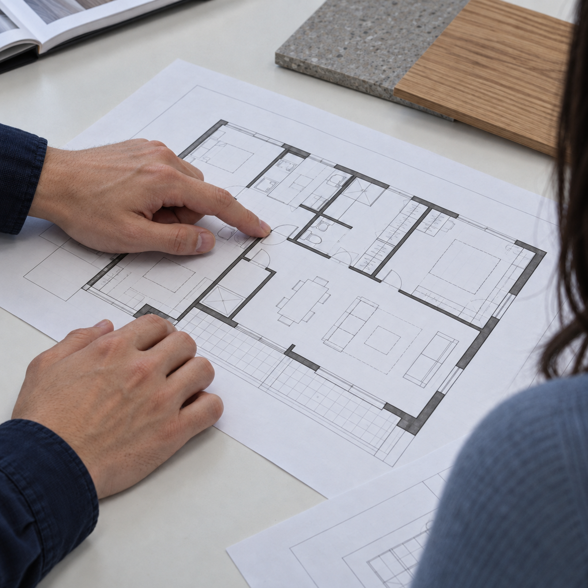

개인의 바람이 아닌
고객의 바람으로.
우리의 취향과 편의보다 고객에게 필요한 변화를 먼저 생각합니다. 견적과 과정, 작은 선택까지 결정의 기준을 고객의 일상에 둡니다.
한층 더 나은 일상, 네모와 함께

네모는 회사의 편의보다 고객의 경험을 먼저 생각합니다. 견적부터 공간이 완성되는 과정까지, 고객의 입장에서 기준을 세웠습니다.
이 방식이 오래갈 수 있을지 의심하는 시선도 있었지만, 우리는 끈질긴 고민과 몰입으로 해답을 찾아왔습니다.
고객을 위한 선택이 더 나은 공간으로, 그 공간이 한층 더 나은 일상으로 이어지도록. 네모는 공간과 함께 발전합니다.
비용을 판단하는 기준은 고객도 이해할 수 있어야 합니다. 무엇을 바꾸고, 어디까지 진행하는지. 네모는 견적을 고객의 입장에서 설계합니다.
내 공간의 견적 상담하기항목을 눌러 확인할 내용을 살펴보세요.
시공할 공간과 제외할 부분을 구분합니다. 철거·설비·마감 등 어떤 작업이 필요한지 함께 확인합니다.
선택한 소재와 마감 사양을 살펴봅니다. 같은 공간에서도 선택에 따라 달라지는 비용을 확인합니다.
면적과 수량, 현장의 조건을 확인합니다. 금액을 비교할 때 필요한 산정 기준을 함께 살펴봅니다.
범위나 자재를 바꾸면 어떤 항목이 달라지는지 확인합니다. 변경 내용과 비용을 함께 검토합니다.
첫 이야기부터 공간의 완성까지.
지금 어떤 단계인지, 다음에 무엇을 정할지 함께 살펴봅니다.
지금의 불편함과 원하는 변화, 예산과 일정을 이야기합니다. 공간을 바꾸는 이유에서 출발해 우선순위를 함께 정합니다.
크기와 구조, 설비와 동선을 살펴봅니다. 가능한 변화와 확인이 필요한 부분을 구분하고 설계의 바탕을 만듭니다.
생활과 운영 방식에 맞춰 배치와 소재를 연결합니다. 선택에 따른 차이를 살펴보며 고객에게 맞는 방향을 함께 찾습니다.
정한 방향을 실제 공간으로 옮깁니다. 마감과 사용에 필요한 부분을 확인하며 새롭게 시작할 일상을 준비합니다.
공간과 공사 범위에 따라 세부 일정과 진행 방식은 달라질 수 있습니다.
우리의 취향과 편의보다 고객에게 필요한 변화를 먼저 생각합니다. 견적과 과정, 작은 선택까지 결정의 기준을 고객의 일상에 둡니다.
원하는 모습과 지금의 불편함을 듣습니다. 우리가 보여주고 싶은 공간보다 고객에게 필요한 공간을 먼저 생각합니다.
보이는 모습과 실제 사용을 함께 살핍니다. 집의 생활 동선부터 매장의 고객 경험까지, 공간이 쓰이는 순간을 생각합니다.
처음 나눈 생각이 실제 공간에서도 이어지도록. 소재와 마감, 손이 닿는 작은 부분까지 세심하게 확인합니다.